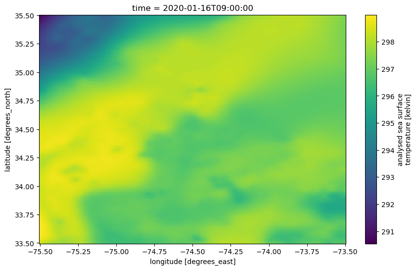

# Suppress warnings
import warnings
warnings.simplefilter('ignore')
warnings.filterwarnings('ignore')
from pprint import pprint
import earthaccess
import xarray as xrData subsetting and plotting with earthaccess and xarray
📘 Learning Objectives
- How to crop a single data file
- How to create a data cube (DataSet) with
xarray- Extract variables, temporal slices, and spatial slices from an
xarraydataset
Summary
In this examples we will use the xarray and earthaccess to subset data and make figures.
For this tutorial we will use the GHRSST Level 4 MUR Global Foundation Sea Surface Temperature Analysis (v4.1) data. This is much higher resolution data than the AVHRR data and we will do spatially subsetting to a small area of interest.
Import Required Packages
Authenticate to NASA Earthdata
We will authenticate our Earthaccess session, and then open the results like we did in the Search & Discovery section.
auth = earthaccess.login()
# are we authenticated?
if not auth.authenticated:
# ask for credentials and persist them in a .netrc file
auth.login(strategy="interactive", persist=True)Get a vector of urls to our nc files
short_name = 'MUR-JPL-L4-GLOB-v4.1'
version = "4.1"
date_start = "2020-01-01"
date_end = "2020-04-01"
date_range = (date_start, date_end)
# min lon, min lat, max lon, max lat
bbox = (-75.5, 33.5, -73.5, 35.5)
results = earthaccess.search_data(
short_name = short_name,
version = version,
cloud_hosted = True,
temporal = date_range,
bounding_box = bbox,
)Granules found: 92Crop and plot one netCDF file
Each MUR SST netCDF file is large so I do not want to download. Instead we will subset the data on the server side. We will start with one file.
fileset = earthaccess.open(results[0:1])
ds = xr.open_dataset(fileset[0])Opening 1 granules, approx size: 0.66 GBNote that xarray works with “lazy” computation whenever possible. In this case, the metadata are loaded into JupyterHub memory, but the data arrays and their values are not — until there is a need for them.
Let’s print out all the variable names.
for v in ds.variables:
print(v)time
lat
lon
analysed_sst
analysis_error
mask
sea_ice_fraction
dt_1km_data
sst_anomalyOf the variables listed above, we are interested in analysed_sst.
ds.variables['analysed_sst'].attrs{'long_name': 'analysed sea surface temperature',
'standard_name': 'sea_surface_foundation_temperature',
'units': 'kelvin',
'valid_min': -32767,
'valid_max': 32767,
'comment': '"Final" version using Multi-Resolution Variational Analysis (MRVA) method for interpolation',
'source': 'MODIS_T-JPL, MODIS_A-JPL, AMSR2-REMSS, AVHRRMTA_G-NAVO, AVHRRMTB_G-NAVO, iQUAM-NOAA/NESDIS, Ice_Conc-OSISAF'}Subsetting
In addition to directly accessing the files archived and distributed by each of the NASA DAACs, many datasets also support services that allow us to customize the data via subsetting, reformatting, reprojection/regridding, and file aggregation. What does subsetting mean? To subset means to extract only the portions of a dataset that are needed for a given purpose.
There are three primary types of subsetting that we will walk through: 1. Temporal 2. Spatial 3. Variable
In each case, we will be excluding parts of the dataset that are not wanted using xarray. Note that “subsetting” is also called a data “transformation”.
# Display the full dataset's metadata
ds<xarray.Dataset> Size: 29GB
Dimensions: (time: 1, lat: 17999, lon: 36000)
Coordinates:
* time (time) datetime64[ns] 8B 2020-01-16T09:00:00
* lat (lat) float32 72kB -89.99 -89.98 -89.97 ... 89.98 89.99
* lon (lon) float32 144kB -180.0 -180.0 -180.0 ... 180.0 180.0
Data variables:
analysed_sst (time, lat, lon) float64 5GB ...
analysis_error (time, lat, lon) float64 5GB ...
mask (time, lat, lon) float32 3GB ...
sea_ice_fraction (time, lat, lon) float64 5GB ...
dt_1km_data (time, lat, lon) timedelta64[ns] 5GB ...
sst_anomaly (time, lat, lon) float64 5GB ...
Attributes: (47)Now we will prepare a subset. We’re using essentially the same spatial bounds as above; however, as opposed to the earthaccess inputs above, here we must provide inputs in the formats expected by xarray. Instead of a single, four-element, bounding box, we use Python slice objects, which are defined by starting and ending numbers.
ds_subset = ds.sel(time=date_start, lat=slice(33.5, 35.5), lon=slice(-75.5, -73.5))
ds_subset<xarray.Dataset> Size: 2MB
Dimensions: (time: 1, lat: 201, lon: 201)
Coordinates:
* time (time) datetime64[ns] 8B 2020-01-16T09:00:00
* lat (lat) float32 804B 33.5 33.51 33.52 ... 35.48 35.49 35.5
* lon (lon) float32 804B -75.5 -75.49 -75.48 ... -73.51 -73.5
Data variables:
analysed_sst (time, lat, lon) float64 323kB ...
analysis_error (time, lat, lon) float64 323kB ...
mask (time, lat, lon) float32 162kB ...
sea_ice_fraction (time, lat, lon) float64 323kB ...
dt_1km_data (time, lat, lon) timedelta64[ns] 323kB ...
sst_anomaly (time, lat, lon) float64 323kB ...
Attributes: (47)Plotting
We will first plot using the methods built-in to the xarray package.
Note that, as opposed to the “lazy” loading of metadata previously, this will now perform “eager” computation, pulling the required data chunks.
ds_subset['analysed_sst'].plot(figsize=(10,6), x='lon', y='lat');
Create a data cube by combining multiple netCDF files
When we open multiple files, we use open_mfdataset(). Once again, we are doing lazy loading. Note this method works best if you are in the same Amazon Web Services (AWS) region as the data (us-west-2) and can use S3 connection. For the EDM workshop, we are on an Azure JupyterHub and are using https connection so this is much much slower. If we had spun up this JupyterHub on AWS us-west-2 where the NASA data are hosted, we could load a whole year of data instantly.
fileset = earthaccess.open(results)
ds = xr.open_mfdataset(fileset)Opening 92 granules, approx size: 62.96 GBds<xarray.Dataset> Size: 3TB
Dimensions: (time: 92, lat: 17999, lon: 36000)
Coordinates:
* time (time) datetime64[ns] 736B 2020-01-01T09:00:00 ... 2020...
* lat (lat) float32 72kB -89.99 -89.98 -89.97 ... 89.98 89.99
* lon (lon) float32 144kB -180.0 -180.0 -180.0 ... 180.0 180.0
Data variables:
analysed_sst (time, lat, lon) float64 477GB dask.array<chunksize=(1, 1023, 2047), meta=np.ndarray>
analysis_error (time, lat, lon) float64 477GB dask.array<chunksize=(1, 1023, 2047), meta=np.ndarray>
mask (time, lat, lon) float32 238GB dask.array<chunksize=(1, 1447, 2895), meta=np.ndarray>
sea_ice_fraction (time, lat, lon) float64 477GB dask.array<chunksize=(1, 1447, 2895), meta=np.ndarray>
dt_1km_data (time, lat, lon) timedelta64[ns] 477GB dask.array<chunksize=(1, 1447, 2895), meta=np.ndarray>
sst_anomaly (time, lat, lon) float64 477GB dask.array<chunksize=(1, 1023, 2047), meta=np.ndarray>
Attributes: (12/47)
Conventions: CF-1.7
title: Daily MUR SST, Final product
summary: A merged, multi-sensor L4 Foundation SST anal...
references: http://podaac.jpl.nasa.gov/Multi-scale_Ultra-...
institution: Jet Propulsion Laboratory
history: created at nominal 4-day latency; replaced nr...
... ...
project: NASA Making Earth Science Data Records for Us...
publisher_name: GHRSST Project Office
publisher_url: http://www.ghrsst.org
publisher_email: ghrsst-po@nceo.ac.uk
processing_level: L4
cdm_data_type: grid- timePandasIndex
PandasIndex(DatetimeIndex(['2020-01-01 09:00:00', '2020-01-02 09:00:00', '2020-01-03 09:00:00', '2020-01-04 09:00:00', '2020-01-05 09:00:00', '2020-01-06 09:00:00', '2020-01-07 09:00:00', '2020-01-08 09:00:00', '2020-01-09 09:00:00', '2020-01-10 09:00:00', '2020-01-11 09:00:00', '2020-01-12 09:00:00', '2020-01-13 09:00:00', '2020-01-14 09:00:00', '2020-01-15 09:00:00', '2020-01-16 09:00:00', '2020-01-17 09:00:00', '2020-01-18 09:00:00', '2020-01-19 09:00:00', '2020-01-20 09:00:00', '2020-01-21 09:00:00', '2020-01-22 09:00:00', '2020-01-23 09:00:00', '2020-01-24 09:00:00', '2020-01-25 09:00:00', '2020-01-26 09:00:00', '2020-01-27 09:00:00', '2020-01-28 09:00:00', '2020-01-29 09:00:00', '2020-01-30 09:00:00', '2020-01-31 09:00:00', '2020-02-01 09:00:00', '2020-02-02 09:00:00', '2020-02-03 09:00:00', '2020-02-04 09:00:00', '2020-02-05 09:00:00', '2020-02-06 09:00:00', '2020-02-07 09:00:00', '2020-02-08 09:00:00', '2020-02-09 09:00:00', '2020-02-10 09:00:00', '2020-02-11 09:00:00', '2020-02-12 09:00:00', '2020-02-13 09:00:00', '2020-02-14 09:00:00', '2020-02-15 09:00:00', '2020-02-16 09:00:00', '2020-02-17 09:00:00', '2020-02-18 09:00:00', '2020-02-19 09:00:00', '2020-02-20 09:00:00', '2020-02-21 09:00:00', '2020-02-22 09:00:00', '2020-02-23 09:00:00', '2020-02-24 09:00:00', '2020-02-25 09:00:00', '2020-02-26 09:00:00', '2020-02-27 09:00:00', '2020-02-28 09:00:00', '2020-02-29 09:00:00', '2020-03-01 09:00:00', '2020-03-02 09:00:00', '2020-03-03 09:00:00', '2020-03-04 09:00:00', '2020-03-05 09:00:00', '2020-03-06 09:00:00', '2020-03-07 09:00:00', '2020-03-08 09:00:00', '2020-03-09 09:00:00', '2020-03-10 09:00:00', '2020-03-11 09:00:00', '2020-03-12 09:00:00', '2020-03-13 09:00:00', '2020-03-14 09:00:00', '2020-03-15 09:00:00', '2020-03-16 09:00:00', '2020-03-17 09:00:00', '2020-03-18 09:00:00', '2020-03-19 09:00:00', '2020-03-20 09:00:00', '2020-03-21 09:00:00', '2020-03-22 09:00:00', '2020-03-23 09:00:00', '2020-03-24 09:00:00', '2020-03-25 09:00:00', '2020-03-26 09:00:00', '2020-03-27 09:00:00', '2020-03-28 09:00:00', '2020-03-29 09:00:00', '2020-03-30 09:00:00', '2020-03-31 09:00:00', '2020-04-01 09:00:00'], dtype='datetime64[ns]', name='time', freq=None)) - latPandasIndex
PandasIndex(Index([-89.98999786376953, -89.9800033569336, -89.97000122070312, -89.95999908447266, -89.94999694824219, -89.94000244140625, -89.93000030517578, -89.91999816894531, -89.91000366210938, -89.9000015258789, ... 89.9000015258789, 89.91000366210938, 89.91999816894531, 89.93000030517578, 89.94000244140625, 89.94999694824219, 89.95999908447266, 89.97000122070312, 89.9800033569336, 89.98999786376953], dtype='float32', name='lat', length=17999)) - lonPandasIndex
PandasIndex(Index([-179.99000549316406, -179.97999572753906, -179.97000122070312, -179.9600067138672, -179.9499969482422, -179.94000244140625, -179.92999267578125, -179.9199981689453, -179.91000366210938, -179.89999389648438, ... 179.91000366210938, 179.9199981689453, 179.92999267578125, 179.94000244140625, 179.9499969482422, 179.9600067138672, 179.97000122070312, 179.97999572753906, 179.99000549316406, 180.0], dtype='float32', name='lon', length=36000))
- Conventions :
- CF-1.7
- title :
- Daily MUR SST, Final product
- summary :
- A merged, multi-sensor L4 Foundation SST analysis product from JPL.
- references :
- http://podaac.jpl.nasa.gov/Multi-scale_Ultra-high_Resolution_MUR-SST
- institution :
- Jet Propulsion Laboratory
- history :
- created at nominal 4-day latency; replaced nrt (1-day latency) version.
- comment :
- MUR = "Multi-scale Ultra-high Resolution"
- license :
- These data are available free of charge under data policy of JPL PO.DAAC.
- id :
- MUR-JPL-L4-GLOB-v04.1
- naming_authority :
- org.ghrsst
- product_version :
- 04.1
- uuid :
- 27665bc0-d5fc-11e1-9b23-0800200c9a66
- gds_version_id :
- 2.0
- netcdf_version_id :
- 4.1
- date_created :
- 20200124T180027Z
- start_time :
- 20200101T090000Z
- stop_time :
- 20200101T090000Z
- time_coverage_start :
- 20191231T210000Z
- time_coverage_end :
- 20200101T210000Z
- file_quality_level :
- 3
- source :
- MODIS_T-JPL, MODIS_A-JPL, AMSR2-REMSS, AVHRRMTA_G-NAVO, AVHRRMTB_G-NAVO, iQUAM-NOAA/NESDIS, Ice_Conc-OSISAF
- platform :
- Terra, Aqua, GCOM-W, MetOp-A, MetOp-B, Buoys/Ships
- sensor :
- MODIS, AMSR2, AVHRR, in-situ
- Metadata_Conventions :
- Unidata Observation Dataset v1.0
- metadata_link :
- http://podaac.jpl.nasa.gov/ws/metadata/dataset/?format=iso&shortName=MUR-JPL-L4-GLOB-v04.1
- keywords :
- Oceans > Ocean Temperature > Sea Surface Temperature
- keywords_vocabulary :
- NASA Global Change Master Directory (GCMD) Science Keywords
- standard_name_vocabulary :
- NetCDF Climate and Forecast (CF) Metadata Convention
- southernmost_latitude :
- -90.0
- northernmost_latitude :
- 90.0
- westernmost_longitude :
- -180.0
- easternmost_longitude :
- 180.0
- spatial_resolution :
- 0.01 degrees
- geospatial_lat_units :
- degrees north
- geospatial_lat_resolution :
- 0.01
- geospatial_lon_units :
- degrees east
- geospatial_lon_resolution :
- 0.01
- acknowledgment :
- Please acknowledge the use of these data with the following statement: These data were provided by JPL under support by NASA MEaSUREs program.
- creator_name :
- JPL MUR SST project
- creator_email :
- ghrsst@podaac.jpl.nasa.gov
- creator_url :
- http://mur.jpl.nasa.gov
- project :
- NASA Making Earth Science Data Records for Use in Research Environments (MEaSUREs) Program
- publisher_name :
- GHRSST Project Office
- publisher_url :
- http://www.ghrsst.org
- publisher_email :
- ghrsst-po@nceo.ac.uk
- processing_level :
- L4
- cdm_data_type :
- grid